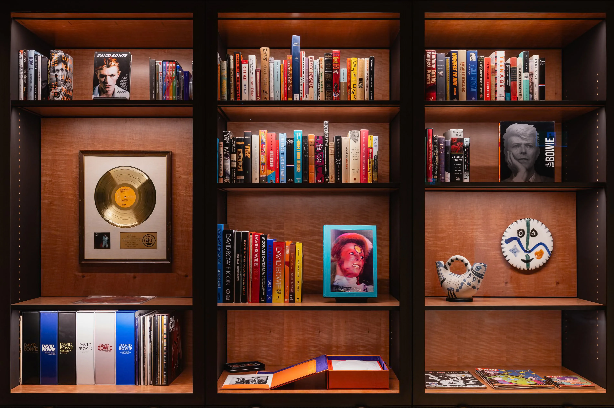
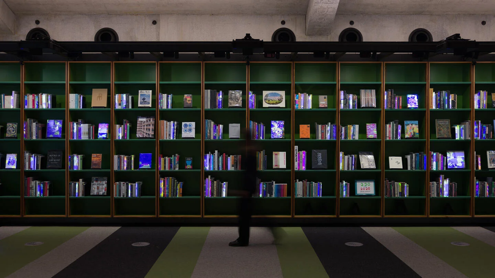
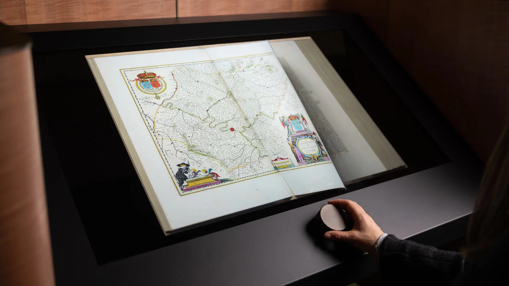

Phrontisterion
Hobart, Australia
A dream project to redefine how people discover books inside one of the world’s most unusual libraries.
When David Walsh set out to build a new library beneath Mona, his ambition extended far beyond creating another reading room. His brief to us was deceptively simple. “I want to be able to move books arbitrarily, but still know where they are. The librarians become curators.” This meant no Dewey or traditional logic of classification for the collection.
An excellent quote from Borges that I uncovered in my research.
The Phrontisterion collection includes more than 50,000 books, rare manuscripts and maps. Built over decades, it spans literature, philosophy, science, history, art and countless other fields, revealing the breadth of Walsh’s curiosity rather than any single collecting agenda.

A curated arrangement of Bowie books and ephemera, including the handwritten lyrics to Starman alongside Picasso plates.
Working alongside technologists, librarians and curators over three and a half years, we designed a new visitor experience that treats every book as a point of entry into the wider collection. Rather than following a fixed shelf order, visitors can begin almost anywhere, uncover unexpected connections between books, and navigate the collection through a combination of physical browsing and digital guidance.
One of the library’s defining features is a series of interactive “Live Bays” that reveal the collection as a network of ideas rather than a static archive.
Prototyping the “Live Bays” concept using Lidar and computer vision to allow people to physically reveal connections amongst the books on the shelves.
The Live Bays installation spans 15 metres and features over 2,500 books that respond to visitor interaction in real time.

A second major experience we designed is The Dial, which challenges the idea that the rarest books are the least accessible.

We developed a display and dial so that, rather than seeing a single spread from behind glass, visitors can turn through the entire book at 1:1 scale and resolution, page by page.
Shakespeare’s First Folio has its own station right next to the real thing, letting you turn through any of the 36 plays at full scale.
Over 60 rare books and atlases were reproduced in painstaking detail and can be navigated by a simple brass “dial”. The result is an experience that captures something of the quiet ritual of reading while opening remarkable works to every visitor.
All of this was in service of the concept of a library and the physical book. We could have gone the “all digital” route, but we pushed the other way: we celebrated the open collection and encouraged visitors to explore and discover in ways both familiar and new.
You can read more about this project at...
- The Guardian (The cost blowout was Anselm Kiefer’s doing, not ours.)
- The ABC
- The Art Newspaper
- The Conversation
- Time and Tide (my favourite of the bunch)